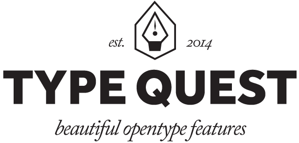
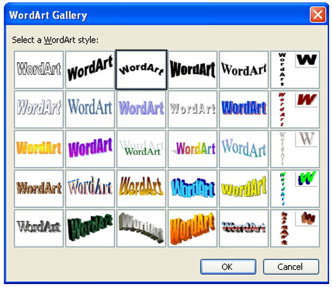
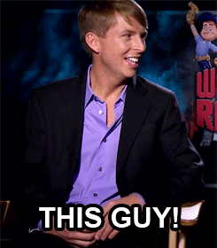
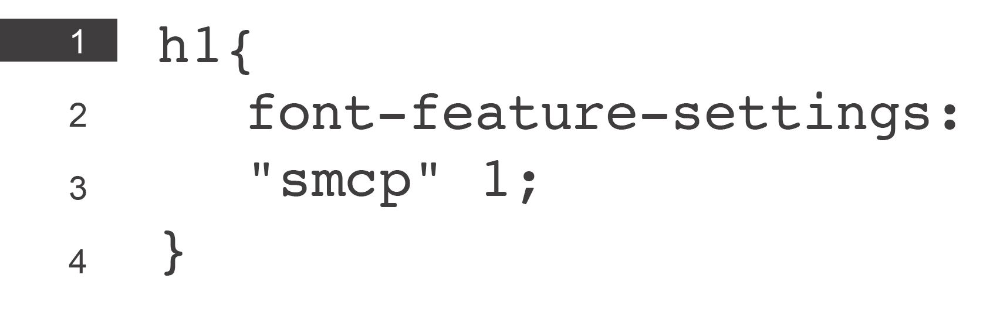

Cool stuff.


What aboutthe web?
Typography & the Web
Educate& Promote
Web Designers, Web Developers & Graphic Designers.
FontsFormattedFor the Web
Sexy
Junk inthe trunk.
Extended characters such as ligatures, real fractions, stylistic sets, small caps, etc.
ff fi fj fl ffi
ff fi fj fl ffi
01234567890
small caps
Control& use offeatureson the web
You couldn'tuntil recently!
CSS3
* Experimental and in the working Editor’s Draft.
fontfeaturesettings*


Yes, you will need browser prefixes!

TYPEQUEST.ORG
Leading ExpertsTwitter
Visitors 0
Pageviews 0
Referral 0
Direct 0
Mid-November to Today
nextsteps.
thankyou
Follow me at @tsanguinette